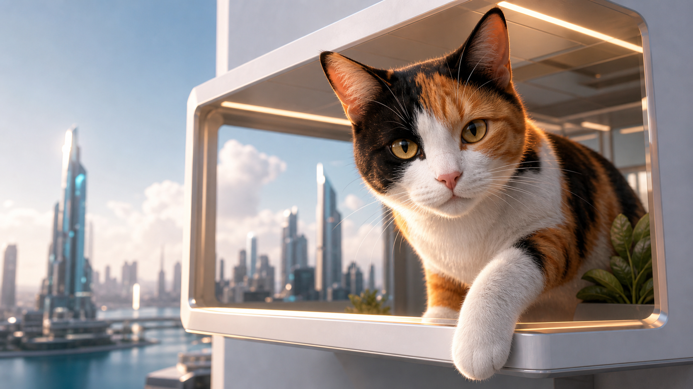
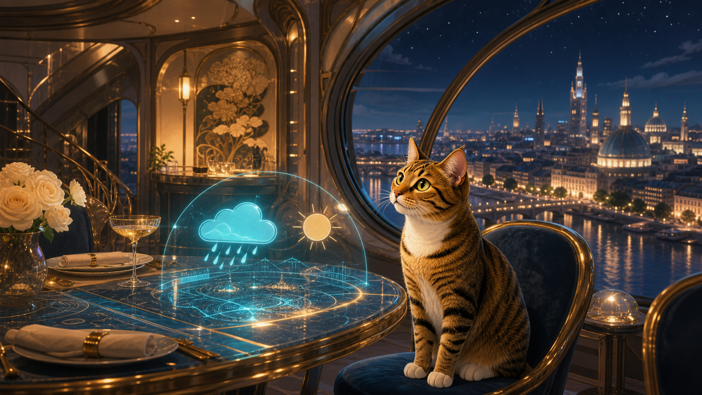
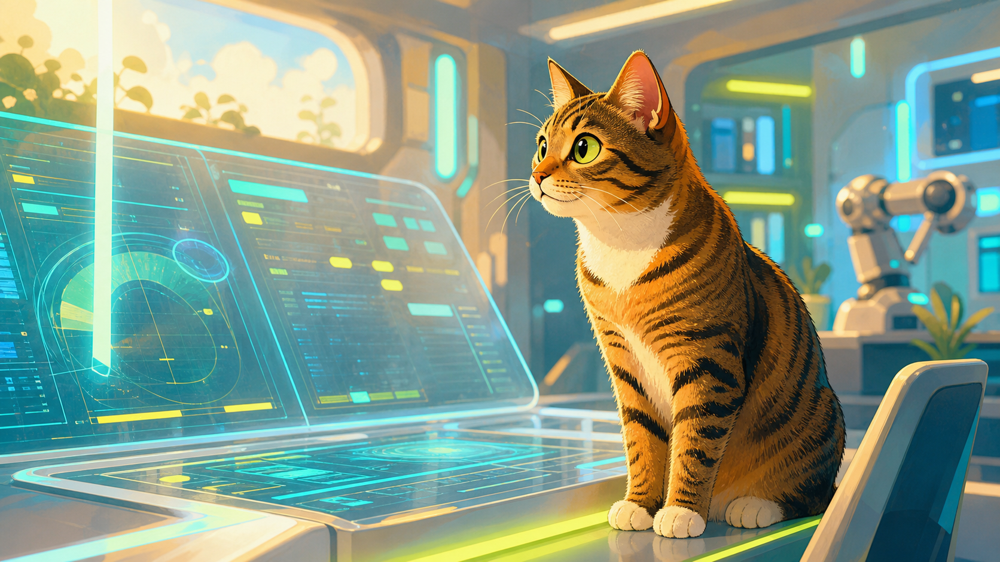
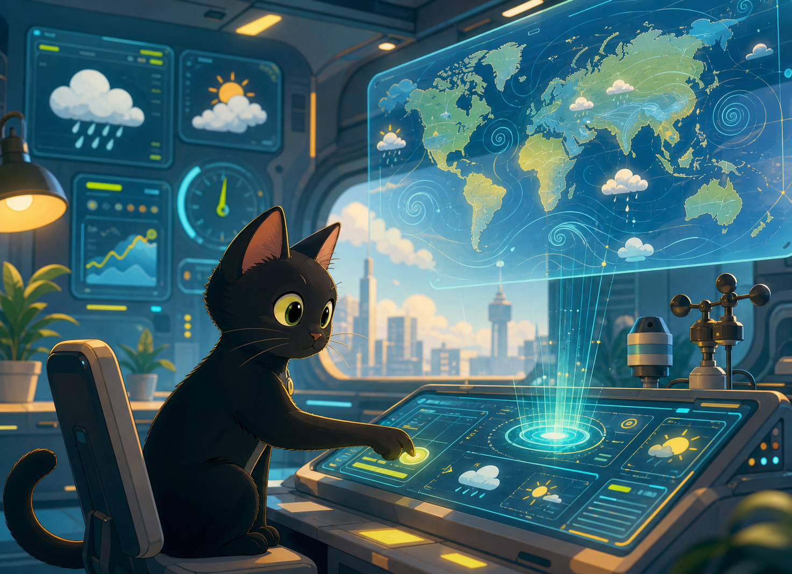

畫面有節奏
開場、切頁、按鈕與提示都有輕微動態，讓網站更像可以逛的產品頁。
- 切頁像輪播一樣滑動。
- 按鈕與卡片只保留必要的回饋。
選擇網站語氣
同一個網站，提供未來科技、溫暖貓咪與金屬光澤三種語氣；請先選擇一種風格再進入網站。快速導覽
可以輸入「背景改成特殊金色」、「切到技術頁」、「字體小一點」或「這個區塊怎麼做」。
這裡把天氣、城市時間、互動場景和快速導覽做成一個可以左右切換的展示網站。 每一頁像一件作品：有主視覺、有狀態、有互動，也保留讓導覽員直接替你操作畫面的能力。


互動場景
讓你先用一個簡單、會動的 3D 場景感受網站的氣氛。
切換不同模式，看不同節奏呈現的資料流動。
如果想安靜閱讀，可以用穩定或專注模式；想看更多動態，就切到動態模式。
網站特色
這個網站保留一般網站該有的導覽、內容、圖片與互動，同時加入可以用一句話調整畫面的快速導覽。
開場、切頁、按鈕與提示都有輕微動態，讓網站更像可以逛的產品頁。
首頁後的場景可以切模式，也能讓貓咪視覺跟著滑鼠互動。
每個分頁左右滑動切換，手機也能用手勢或選單快速前往。
可以切換城市，直接查看當地時間、溫度、風速與資料來源。
選單、切頁、字體大小與降低動態都針對手機版重新整理。
影片與圖片作為補充內容，即使影片沒載入也能正常閱讀。
圖片展示
這些圖片讓網站比較有記憶點：城市、控制台、貓咪助手都放在同一個世界觀裡，但不讓畫面變得太幼稚。
快速導覽
輸入「切到展示頁」、「背景改成白色」、「字體大一點」幫您更新成你喜歡的畫面OwO。
動態影像
這個網站想像成一間夜裡還亮著燈的小型觀測站：
貓咪不是主角，而是陪你整理城市訊號的值班員。
影片負責把城市、天氣、控制台和導覽員串成同一個世界，
讓每一頁看起來不是獨立的截圖，而是一段可以被探索的旅程。
當你切換頁面，就像從入口走進各個入口，
快速導覽則是這間觀測站裡的操作員。
怎麼使用
你可以從首頁開始看，也可以用手機選單直接跳到想看的分頁；想調整畫面就交給快速導覽。
從首頁、介紹、特色一路切到展示頁，
像看一個有互動效果的網站。
到控制頁輸入自然語言，讓網站幫你切頁、
換背景、調字體或更新跑馬燈。
同樣的內容可以切成未來科技或溫暖風格，
背景可改色，但不會把整個主題打掉。
手機版用左側選單整理頁面和控制項，
避免按鈕擠在第一眼畫面裡。
影片、天氣或導覽回覆如果暫時失敗，網站仍保留圖片、文字與安全 fallback。
如果想了解製作方式，可以到簡報頁看架構、互動和安全控制。

主視覺角色 貓咪只做引導，重點仍然放在城市資料與頁面操作。
城市資料桌 時間、天氣與風速被整理成容易比較的城市訊號。網站筆記
這一頁保留比較技術向的內容，但改成可滑動的網站筆記；不想看技術也可以略過。